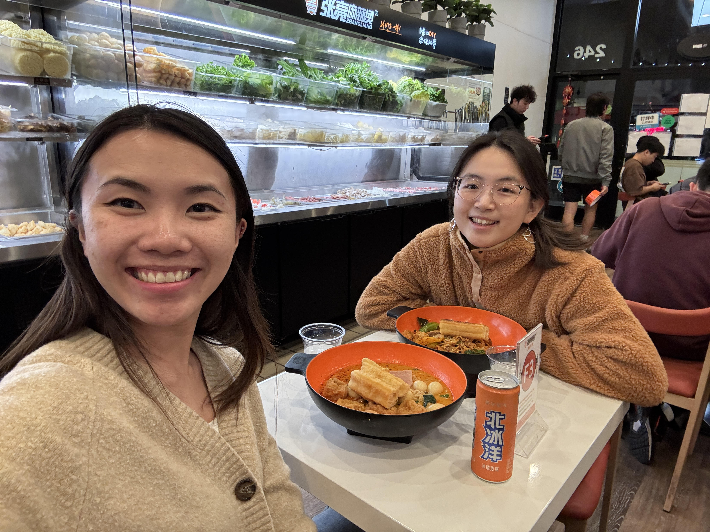
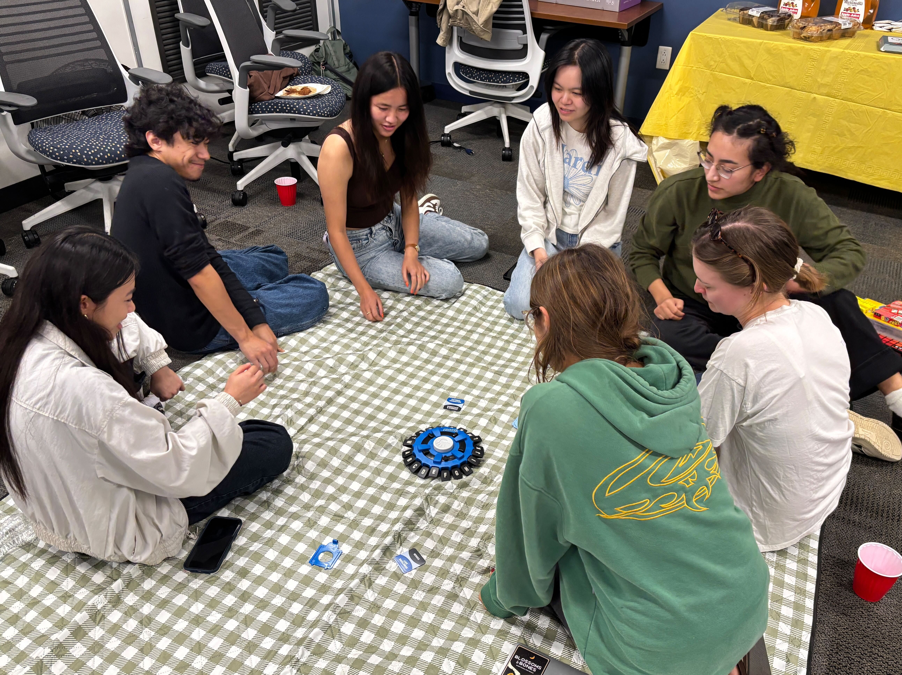

Jasmine E. Tran
Child-centered designer · AI & EdTech researcher

Child-centered designer · AI & EdTech researcher
I am a second-year Ph.D. student in Education specializing in Teaching, Learning, and Education Improvement (TLEI) at the University of California, Irvine. My advisors are Professor Mark Warschauer and Professor Kylie Peppler. I am especially interested in digital learning—particularly in evaluating and developing educational technology that leverages the unique strengths of diverse students. I aim to understand the learning theories and design elements that make these tools effective and to implement them through research–practice partnerships.
As a graduate student researcher for the Digital Learning Lab, I work on Converse to Learn which is an NSF-funded project in collaboration with PBS KIDS. We investigate how young children learn STEM concepts from interactive educational media by embedding AI conversational agents (CAs). Like Dora the Explorer, but if Dora could actually answer you! Through this project, my goal is to design learning tools that can make STEM learning more engaging and impactful for students of all backgrounds. Prior to my Ph.D. studies, I received my B.A. in Psychology from San Jose State University and worked on the Rapid Online Assessments of Reading project at Stanford University, where I designed gamified, online reading assessments.


I draw freehand and do vector art sometimes!
I have experienced first-hand how powerful mentorship is. As a first-generation Vietnamese-American college student, I would not have been able to pursue a Ph.D. program without financial supports and amazing mentors who took a chance on me.
If you are someone who has been historically underrepresented in academia — low-income, first-generation, queer — or just someone who is anxious about academia, please feel free to reach out! I am more than happy to chat, because research is for everyone. 🌱
Email me at jasetran@uci.edu
